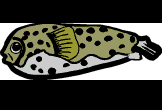

|  | Welcome to the
All games are on Mondays at Clague Middle School.
|
| Ann Arbor Rec & Ed has a page with schedules, standings, etc. |
Our Team
|
Active Roster
• John Cady • Phireth Lorth (sub) |
Honorary Members
• Michael Fallon |
Our Mascot
| The blowfish, known as fugu in Japan, is a friendly puffer fish. It looks small and meek but when it puffs up, the blowfish can be quite formidable. It's best to be nice to the blowfish; some catch and eat it as a delicacy, but that's a dangerous prospect. (Are you scared yet? ;-) ) |
Send comments to: Julia O'Brien or John Cady